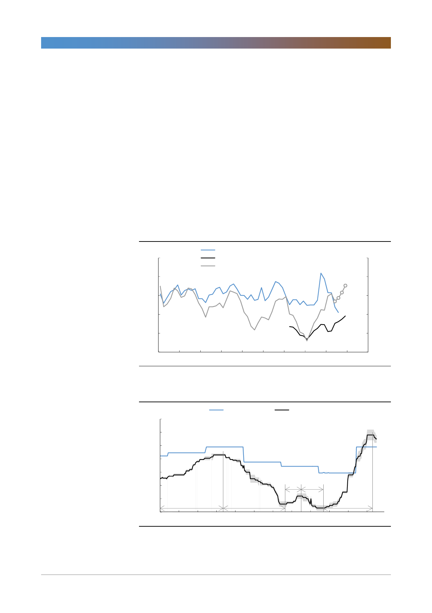

고려아연(010130)
중국의 아연제련소 가동률 상승, 그리고 spot TC 하락
중국의 아연 제련소 가동률은 3월 76.9%에서 6월 85.3%로 3개월간 8.4%p 상
승했다. 이는 2015년 이후 가장 높은 수준이다. 중국의 아연 제련량 규모는 지속
적으로 증가하고 있다. 즉 글로벌 아연 정광 공급량이 부진할 경우 언제든지
spot TC는 하락할 수 있음을 의미한다.
7월 19일 기준 중국 수입 아연의 제련수수료는 톤당 275달러로 전주 대비 보합
세를 유지했다. 지난 6월 21일까지 68주간 단계적인 상승세를 지속해 온 제련수
수료가 하락 추세로 전환되었다. 과거 spot TC를 살펴보면 주간 단위의 데이터
이나 방향성의 유지기간은 최소 21주로 추세는 쉽게 달라지지 않았다. 우리는 이
번 spot TC의 하락 역시 단기간에 끝나지 않을 것으로 판단한다. 그리고 이는
2020년의 Benchmark TC와 하반기 실적에 영향을 미칠 것이다.
[그림 8] 중국의 아연 제련규모와 가동률 현황
(만톤)
70
60
아연 제련량_ILZSG(좌)
아연 제련량_주요 32개 아연제련소(좌)
주요 32개 아연제련소 가동률(우)
(%)
100
6월 85.3
90
50
80
40
70
30
60
20
50
15.01 15.07 16.01 16.07 17.01 17.07 18.01 18.07 19.01 19.07
자료: WIND, mymetel, 한국투자증권
[그림 9] 중국 수입 아연 제련수수료: 가장 짧았던 유지기간은 21주
(달러/톤)
350
300
250
200
Benchmark TC
spot TC(평균)
2019년 벤치마크 245달러/톤
2019년 연초 이후 평균 255달러/톤
6월 21일 기준 290달러/톤
6월 28일 기준 280달러/톤
7월 05일 기준 280달러/톤
7월 12일 기준 275달러/톤
150
100
21주 30주
50
87주
80주
68주
0
13.10 14.04 14.10 15.04 15.10 16.04 16.10 17.04 17.10 18.04 18.10 19.04
자료: WIND, 한국투자증권
5